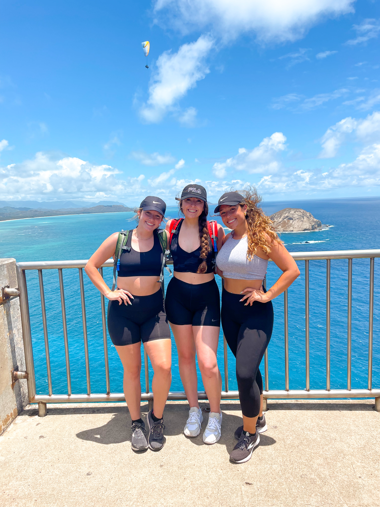

1 / 4

About Me
2 / 4

University of South Carolina
3 / 4

Traveling with Friends
4 / 4

Hawaii: favorite place I traveled to
About Me
My name is Makayla Bowen. I am a Senior at the University of South Carolina. I am graduating in the Spring of 2023 with a B.S in Psychology and a minor in Buisness Administration. I grew up about 30 minutes from the downtown area, so I have always been a Gamecock at heart. My mom attended the University of South Carolina, so growing up I watched a lot of carolina football and even went to a few of the games growing up. ...Growing up, I spent most of my time doing competitive dancing. Today, I still enjoy being active by going to the gym or going on walks when it is nice outside. In my free time, I love traveling and going to new places. My favorite place that I have traveled to so far has been Hawaii. I went there two years ago with my cousins and it was one of the most beautiful places I have been too. When I was there I got to go skydiving, hiking, and snorkling. Even though it was a little scary, skydiving was so much fun and something I would love to expeirence again. Another thing I like to do in my past time is work with animals. I am a big dog person, so I love helping out at the local shelters fostering or walking the dogs there.
See more...My Future Career Plans
Upon graduating with a B.S in Psychology, I plan to attend a Masters Entry Nursing Program to obtain my M.S in Nursing. I have always had a passion for working in the medical field and helping others. Currently I work as a medical scribe at a doctors office in the downtown area. I get to work alongside a physician taking notes for each encounter, sending medications, and anything else that the physican may need help with. This has been a great experience for me and has given me exposure to lots of medical terms, medications, and treatment plans. ... I am in the process of applying to 3-4 different programs this Spring. One of them is at the University of South Carolina! The MEPN program is specifically designed for graduates with a non-nursing degree to pursue their master degree in nursing. The program is accelerated and comebines the curriculum of a typical BSN with a MSN in only 1-2 years. I am super excited to graduate and start this journey. My long term goal is to become a Pediatric Nurse Practitioner. I have always loved working with kids and find this would be best suited for me. However, this could always change when I actually start learning and doing different roations in clinicals.
See more...What i Learned From Computer Science